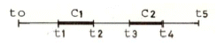
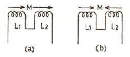
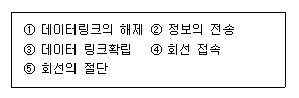

통신설비기능장 (2007-07-15 기출문제)
1과목: 임의 과목 구분(20문항)
1. 가스탐지기의 센서를 맨홀 내에 넣었더니 갑자기 “삐이”하는 경보음이 났다. 이 맨홀은 어떠한 상태인가?
- 산소량이 너무 많다.
- 물이 가득 차 있다.
- 유독가스가 차 있다.
- 유독가스가 전혀 없다.
(정답률: 99%)

2. 두 개의 콘덴서 A, B를 직렬연결하고, 그 양단에 전압을 가했을 때 A의 전압은 B 전압의 5배가 되었다. A의 정전용량은 B의 몇 배인가?
- 1/5
- 1/25
- 5
- 25
(정답률: 67%)
3. 오실로스코프에서 동기신호로 톱니파를 이용하는 이유는?
- 휘도를 조정하려고
- 파형을 정지시키기 위하여
- 브라운관의 초점을 맞추기 위하여
- 파형의 위치를 상, 하 또는 좌, 우로 조절하기 위하여
(정답률: 86%)
4. 300[Ω]읙 특성 임피던스를 갖는 선로에 75[Ω]의 특성임피던스를 갖는 선로를 접속시 반사계수 ?
- 0.25
- 0.5
- 0.6
- 0.75
(정답률: 65%)
5. 감쇠량 최소조건으로 높은 주파수를 사용하는 통신용 케이블의 전기저항을 점차 증가시킬 때 통화전류의 전파속도는 어떻게 변화하는가?
- 일정하다.
- 점차 느려진다.
- 점차 빨라진다.
- 전파속도가 0이 된다.
(정답률: 78%)
6. 58[Ω]의 전기저항과 8.6[H]의 자체 인덕턴스를 직렬로 접속한 전기회로가 있다. 이 전기회로의 시정수는 약 몇 초인가?
- 0.15
- 0.22
- 0.33
- 0.45
(정답률: 56%)
7. 국부발진기의 발진주파수가 885[kHz]이고, 710[kHz]의 주파수에 동조된 수신기의 영상주파수는?
- 1040[kHz]
- 1060[kHz]
- 1165[kHz]
- 1620[kHz]
(정답률: 73%)
8. 데이터 모뎀에 있어서 데이터 변조속도(기본 변조속도)의 표시단위는?
- 비트/초
- BAUD
- CHARACTER/초
- Hz
(정답률: 84%)
9. 방송국에서 발사된 전파가 150[km] 떨어진 거리에 도달하는데 걸리는 시간은 몇 초인가?
- 5
- 1
- 0.01
- 0.0⑤
(정답률: 81%)
10. 안테나의 지향성에 의한 분류에 속하지 않는 것은?
- 등방성 안테나
- 전방향성 안테나
- 단일지향성 안테나
- 원편파 안테나
(정답률: 74%)
11. 다음 중 단파통신과 비교하여 마이크로웨이브 통신의 장점이 아닌 것은?
- 주파수 대역폭이 넓다.
- 가시거리 통신이 가능하다.
- 중계소가 없이 원거리 통신이 가능하다.
- 외부잡음의 영향이 적다.
(정답률: 63%)
12. 평형변조기에서 양측파대 출력 중 단측파대 출력만 얻으려면 무엇을 사용하는가?
- 여파기(filter)
- 진폭제한기(limiter)
- 주파수변별기(discriminator)
- 수정발진기(X-tal oscillator)
(정답률: 74%)
13. 다음 그림에서 트래픽에 관한 설명 중 잘못된 것은?

- 회선을 사용하는 주체를 호(Call)라고 한다.
- 호 C1, 호 C2 외 각각 시작점의 간격, 즉 t3-t1을 생기 간격이라 한다.
- 어랑(Erlang)은 호량의 국제단위이다.
- 단위시간 내의 트래픽량은 [(t2-t1)+(t4-t3)]/t3-t2이다.
(정답률: 59%)
14. 코일의 상호인덕턴스를 측정하는 경우 (a)와 같이 연결할 때 자기인덕턴스는 4[μH], (b)와 같이 연결하는 경우 자기인덕턴스는 1[μH]였다. 2개의 코일 L1과 L2 간의 상호인덕턴스는 몇[μH] 인가? (단, →는 자속의 방향)

- 1.25
- 0.75
- 2.5
- 1
(정답률: 51%)
15. 레이더 안테나로부터 송신된 펄스가 2[μs] 후에 목표물로 반사되어 수신되었다면 이 때 목표물까지의 거리는 몇 [m] 인가?
- 100
- 200
- 300
- 400
(정답률: 61%)
16. 다음 무선설비의 기기 중 형식등록을 하여야 하는 기기는?
- 주파수 공용무선 전화장치
- 디지털 선택호출 전용수신기
- 경보 자동전화장치
- 네비텍스 수신기
(정답률: 77%)
17. 통신용 광섬유 심선의 구조를 내부에서 외부 쪽으로 순서대로 바르게 연결된 것은?
- 클래어 - 코어 - 1차코팅 - 2차코팅
- 코어 - 클래드 - 1차코팅 - 2차코팅
- 1차코팅 - 2차코팅 - 클래드 - 코어
- 1차코어 - 1차클래드 - 2차코어 - 2차클래딩
(정답률: 77%)
18. 데이터와 음성, 비디오(Video)와 같은 트래픽 지원할 수 있는 고속의 통신망으로서 지리적으로 통신망의 길이가 50[km] 이내의 도시지역에 분산되어 있는 LAN들과 컴퓨터 등을 연결하여 통신을 제공하는 고속통신망은 어느 것인가?
- CSMA/CD
- FDDI
- MAN
- WAN
(정답률: 58%)
19. 다음 중 전화기의 보안장치와 관계가 없는 것은?
- 피뢰기(arrestor)
- 퓨즈(fuse)
- 열선륜(heat coil)
- 콘덴서(condenser)
(정답률: 87%)
20. 급전선과 안테나 사이에 임피던스 정합을 하는 이유로서 맞지 않는 것은?
- 정재파비를 크게 한다.
- 최대전력을 전송한다.
- 급전선에서의 손실증가를 방지한다.
- 부정합손실을 감소시킨다.
(정답률: 52%)
2과목: 임의 과목 구분(20문항)
21. 다음 중 기계식 자동전화교환기는?
- M1OCN
- EMD
- TDX-10
- NO.1A
(정답률: 45%)
22. 수직접지 안테나의 설명으로 옳지 않은 것은?
- 복사전파가 수직편파이다.
- 도선의 길이가 λ/4일 때에는 전압급전으로 하는 것이 좋다.
- 수평면 내에서는 무지향성이다.
- 도선의 길이가 λ4보다 긴 경우에는 직렬로 콘덴서를 삽입하여 공진시킨다.
(정답률: 50%)
23. 다음 중 무선전파 채널들을 공동으로 이용하는 방식은?
- Cellular
- MCA
- Pocket bell
- Walkie-talkie
(정답률: 54%)
24. FDM 다중화 신호계위에서 1SG(Super Group)은 몇 개의 BG(Base Group)으로 구성되는가?
- 3
- 4
- 5
- 6
(정답률: 50%)
25. Time-Sharing 방법의 설명 중 틀린 것은?
- 컴퓨터의 이중화가 필요하다.
- 컴퓨터를 다수의 이용자가 사용한다.
- 자원을 공유할 수 있다.
- 파일 등의 사용에 제한이 있을 수 있다.
(정답률: 77%)
26. 다음 중 광통신의 특징이 아닌 것은?
- 광대역성으로 대용량 전송이 가능하다.
- 세경성으로 다대화가 가능하다.
- 가벼워서 작업능률이 양호하다.
- 전력유도가 있어 동작이 불안전하다.
(정답률: 76%)
27. 다음 중 접지 안테나의 실효저항 측정법으로 가장 타당한 것은?
- 표준 인덕턴스 사용법
- 실효 리액턴스법
- 저항 삽입법
- 고유 주파수법
(정답률: 47%)
28. 복수 개의 지구국이 하나의 통신위성을 이용해서 동시에 지구국 상호 간에 통신선로를 설정하는 회선할당 방식에 해당되지 않는 것은?
- 고정할당방식
- 선택할당방식
- 요구할당방식
- 임의할당방식
(정답률: 50%)
29. 간선의 명칭, 전주의 위치, 전주의 종류, 전주의 길이, 전주번호, 주간 거리, 나선의 조수 및 심선의 직경, 가설위치, 지주설치 사항 등을 표시한 선로도면은?
- 나선로도
- 케이블도
- 관로도
- 전선도
(정답률: 44%)
30. 광이 파장에 비하여 그리 크지 않는 물체에 닿으면 그 광은 여러 방향으로 퍼져 진행하는 현상으로서, 광섬유의 손실이 되는 요인은?
- 산란손실
- 흡수손실
- 불완전 구조손실
- 마이크로벤딩손실
(정답률: 56%)
31. 다음은 전송제어의 순서이다. 바른 순서로 된 것은?

- ②-③-①-④-⑤
- ③-④-②-①-⑤
- ④-②-③-①-⑤
- ④-③-②-①-⑤
(정답률: 69%)
32. 다음 중 무선송신기에서 완충 증폭기를 사용하는 주 목적은?
- 주파수 체배를 높이기 위해
- 발진주파수를 안정화시키기 위해
- 증폭의 효율을 대폭 높이기 위해
- 고주파 전력의 증폭을 높이기 위해
(정답률: 68%)
33. 멀티미디어의 특징이 아닌 것은?
- 다채널성과 쌍방향성 통신 지향
- 반도체 기술과 아날로그 기술 지향
- 정보 형태의 다양화와 기록성 지향
- 정보교환의 고속화와 대용량화 지향
(정답률: 55%)
34. 정보통신 시스템의 특징이 아닌 것은?
- 신뢰도가 높다.
- 고속 통신에 적합하다.
- 광대역 전송이 가능하다.
- 중앙집중 방식으로 전환되고 있다.
(정답률: 80%)
35. 다음 중 케이블을 절연 접속하는 가장 중요한 목적은?
- 화학적인 부식을 방지하기 위하여
- 누설 지(地)전류를 차단하기 위하여
- 낙뢰로 인한 피해를 방지하기 위하여
- 납땜을 절약하기 위하여
(정답률: 65%)
36. 반송파로 사용하는 정현파의 진폭변화로 정보를 실어 보내는 변조방식은?
- ASK
- FSK
- PSK
- DPSK
(정답률: 46%)
37. 데이터 전송계와 데이터 처리계와의 중간에 위치하여 양자를 결합하는 장치로 FEP라고도 하는 장치는?
- 통신제어장치
- 전송제어장치
- 모뎀
- CPU
(정답률: 43%)
38. 교환기에 사용되는 신호의 종류가 아닌 것은?
- 감시 신호
- 안전 차단 신호
- 선택 신호
- 가청음이나 안내음
(정답률: 54%)
39. 통신망의 전송기술 중 교환 통신망에 해당하지않는 것은?
- 회선 통신망
- 패킷 통신망
- 근거리 통신망
- 메시지 통신망
(정답률: 54%)
40. HDTV 시스템의 부호 방식 중 MUSE 방식에 대한 설명으로 적합하지 않은 것은?
- 현재 일본에서 사용하고 있는 방식이다.
- 블록 단위로 움직임을 추정하는 방식이다.
- 부호기와 해독기에서 독립적으로 움직임을 검출한다.
- 위성 방속을 전제로 FM 변조 기법을 응용한 아날로그 표본 값 전송 시스템이다.
(정답률: 53%)
3과목: 임의 과목 구분(20문항)
41. ATM 교환 기술에 대한 설명 중 틀린 것은?
- 가입자 정보를 셀이라고 하는 가변 크기의 다양한 패킷으로 분할하여 전송한다.
- 가상 경로 식별자(VPI)와 가상 채널 식별자(VCI)를 사용하기 때문에 통계적 다중화 효과를 기대 할 수 있다.
- 다양한 트래픽 특성의 서비스들을 효과적으로 수용할 수 있다.
- 통일된 하나의 스위치 네트워크로 통신망을 구축할 수 있다.
(정답률: 54%)
42. 통신 프로토콜의 구성요소 중 타이밍을 올바르게 설명한 것은?
- 데이터의 사양, 부호화 방법, 전기적인 신호에 관한 사항을 정의한 것이다.
- 오류, 동기 및 흐름 제어 등의 각종 제어 젙라에 관한 사항을 정의한 것이다.
- 송ㆍ수신단 간 또는 통신 시스템 간의 통신 속도 및 순서 등에 대하여 정의한 것이다.
- 데이터의 사양, 동기 및 흐름 제어, 통신 시스템 간의 통신 속도 등에 대하여 정의한 것이다.
(정답률: 54%)
43. 디지털 전송에서 사용되는 재생 중계기의 구성 요소와 원리가 잘못 연결된 것은?
- 식별회로 - OR 게이트
- 등화기 - 여파기
- 증폭기 - 이득 소자(Transistor)
- 타이밍 발생 회로 - 리미터
(정답률: 60%)
44. ISDN에서 Basic Service를 제공하기 위한 전송속도는 프레임 구성, 동기화와 오버헤드 비트를 포함하면 얼마가 되는가?
- 16 [kbps]
- 64 [kbps]
- 128 [kbps]
- 192 [kbps]
(정답률: 54%)
45. 인터넷상의 Web Browser에 나타내는 문서양식으로 텍스트, 음성, 그림, 동화상 등을 볼 수 있다. 이런 문서 양식을 작성하는 문법에대해 정의 한 것은?
- HTTP(Hypertext Transfer Protocol)
- CGI(Common Gateway Interface)
- URI(Uniform Resource Indicator)
- HTML(Hypertext Markup Language)
(정답률: 64%)
46. 평형형 케이블을 인공 포설 후 곡형처리는 관구또는 접속점으로부터 7[cm] 이상 떨어져서 곡률 반경을 케이블 외경의 몇 배 이상을 유지하여야하는가?
- 3배
- 4배
- 6배
- 20배
(정답률: 48%)
47. 토큰 패싱(Token-Passing) 방식의 프로토콜에 관한 설명 중 옳지 않은 것은?
- 방식상에서 최대거리의 제약이 단점이다.
- CSMA/CD 방식에 비하여 높은 부하에 대해서도안정되게 동작한다.
- CSMA/CD 방식에 비하여 복잡하다.
- 가변길이의 Message 송신이 가능하다.
(정답률: 44%)
48. 디지털 회선교환기의 중계선 정합장치의 기능이 아닌 것은?
- 프레임 코드의 발생(generation of frame code)
- 프레임 배열(alignment of frame)
- 극성변환(polar conversion)
- 부호화-복호화(codec)
(정답률: 66%)
49. 광통신시스템에서 사용되는 발광소자로 맞는 것은?
- LED, APD
- LD, PIN-PD
- LED, PIN-PD
- LED, LD
(정답률: 64%)
50. STP 케이블의 특징으로 틀린 것은?
- 금속박막으로 둘러싸인 차폐된 구조이다.
- 심선끼리의 혼선이 적다.
- 외부 전자파의 간섭을 최대화시킨다.
- 전송속도는 150[Mbps] 정도이다.
(정답률: 63%)
51. 적도 평면에 대해서 50도 정도의 경사각을 가지는 중궤도 위성의 고도는 몇 [km] 인가?
- 300 ~ 1500
- 1500 ~ 3200
- 5000 ~ 25000
- 35800 ~ 36400
(정답률: 50%)
52. 다음 중 완충증폭기를 사용하는 목적으로 가장 타당한 것은?
- 초단파의 변조를 하기 위해서
- 발진주파수 변동을 막기 위해서
- 전력증폭을 하기 위해서
- 주파수를 체배하기 위해서
(정답률: 59%)
53. LAN에서 사용되는 매체 액세스제어(Access Control) 기법이 아닌 것은?
- CSMA/CD
- CDMA/CD
- 토큰버스
- 토큰링
(정답률: 56%)
54. 다음 중 후방 산란법에 의한 광을 검출하는 장비로서 가장 널리 이용되는 것은?
- 오실로스코프
- 레벨메터
- OTDR
- 회로시험기
(정답률: 89%)
55. 이항분포(Binomial distribution)의 특징으로 가장 옳은 것은?
- P=0일 때는 평균치에 대하여 좌ㆍ우 대칭이다.
- P≤0.1이고, np=0.1~10일 때는 포아송 분포에근사한다.
- 부적합품의 출현 개수에 대한 표준편차는D(x)=np이다.
- P≤0.5이고, np≥5일 때는 포아송 분포에근사한다.
(정답률: 56%)
56. “무결점 운동”이라고 불리우는 것으로 품질개선을 위한 동기부여 프로그램은 어느 것인가?
- TQC
- ZD
- MIL-STD
- ISO
(정답률: 56%)
57. 연간 소요량 4000개인 어떤 부품의 발주비용은매회 200원이며, 부품단가는 100원, 연간재고유지비율이 10[%]일 때 F.W.Harris 식에 의한 경제적 주문량은 얼마인가?
- 40개/회
- 400개/회
- 1000개/회
- 1300개/회
(정답률: 68%)
58. 제품공정 분석표(Product Process Chart) 작성시 가공시간 기입법으로 가장 올바른 것은?
- 1개당 가공시간×1로트의 수량/1로트의 총가공시간
- 1로트의 총가공시간/1로트의 총가공시간×1로트의 수량
- 1개당 가공시간×1로트의 총가공시간/1로트의 수량
- 1로트의 총가공시간/1로트의 가공시간×1로트의 수량
(정답률: 52%)
59. 다음 중 검사를 판정의 대상에 의한 분류가 아닌 것은?
- 관리 샘플링검사
- 로트별 샘플링검사
- 전수검사
- 출하검사
(정답률: 57%)
60. M 타입의 자동차 또는 LCD TV를 조립, 완선한후 부적합 수(결점수)를 점검한 데이터에는 어떤 관리도를 사용하는가?
- P 관리도
- nP 관리도
- c 관리도
- x-R 관리도
(정답률: 52%)